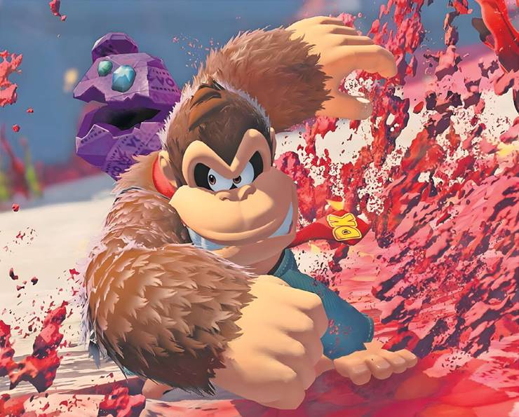
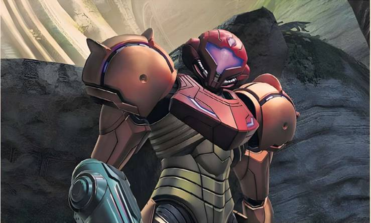

The company has sprung a surprise with the anarchic Bananza game for Switch 2 — but does it justify buying the new console? By Tom Faber
A number of times in the two months since I got my Switch 2, I've turned the console on, still buzzing with the excitement of a new toy, clicked around the menus for a while, and then turned it off again. I couldn't find anything exciting to play.
It’s common for new consoles to feel a little thin in terms of games for their first year or two, but even by the industry’s meagre standards, the Switch 2’s launch line-up was weak. It had one appealing exclusive in Mario Kart World, which is fun for racing a few laps with friends but doesn't invite long, deep sessions of play.
Nor does the console offer a thrill in its hardware. Nintendo has a reputation for thinking outside the box with playful hardware innovations (such as the Wii's motion controls or the Switch’s TV/handheld hybrid design), but the Switch 2 is a machine whose improvements feel incremental rather than revolutionary.
So what is there to feel excited about? And for those on the fence, is it worth buying the new console yet?
Nintendo’s answer to both of these questions has just smashed through the wall in the form of Donkey Kong Bananza, a new game with the Switch 2’s fortunes riding on its muscular, simian shoulders. It’s a 3D platformer, a genre staple for the company, but also a surprise in that it stars Donkey Kong, a B-tier Nintendo mascot, rather than a leading man such as Mario or Link. As if to allay concerns, the normally tight-lipped Nintendo made the unusual move of revealing who at the company was responsible for making the game — the same team that made 2017’s Super Mario Odyssey, which set a modern standard for the genre.
The DNA of Odyssey is abundantly clear in Bananza’s basic formula. As Donkey Kong, you traverse large open worlds seeking hidden crystal bananas, sometimes diving through portals for linear combat and platforming challenges. The world design shows the developers firing on all cylinders, with each space overflowing with clever secrets, beautiful details and stunning vistas. Nintendo truly is gaming’s answer to golden-era Pixar — no other studio is operating at this level of inspired, family-friendly game design.
Each of Nintendo’s banner 3D platformers has a central gimmick, from the water jets of Super Mario Sunshine to the gravity-warping planets of Super Mario Galaxy, and it’s here that the choice of Donkey Kong, a character whose fists are larger than his brain, makes sense — Bananza is all about destruction.
Whereas a Mario game has you balletically running and jumping around a carefully sculpted environment, in Bananza you can just smash through to the other side. Punch through mountains, pummel your way underground and giddily terraform however you see fit.
As you progress through lush forests, alien moonscapes and sunset canyons, you learn to use your destructive capabilities tactically. The game encourages players to pay attention to the materiality of its world — each area of the landscape has its own properties and hardness, from volcanic lava to poisonous swamps, and you must combine these strategically to defeat enemies and progress. Later you gain access to special animal transformations, the titular “Bananzas”, which allow you to sprint, fly and — of course — punch even harder.
Something about smashing through these beautiful landscapes feels gloriously anarchic, and while Nintendo isn't the first to do it — there’s Minecraft, and the smart demolition puzzler Teardown — it’s still a surprise that a company known for tight control and careful design is willing to give the player so much agency to deform terrain and reshape its game worlds.
But this is the new direction Nintendo embarked upon in recent Zelda games, encouraging creative problem solving in Breath of the Wild and Tears of the Kingdom. Whatever the player wants to do, the game tries to say yes, allowing for a high degree of chaos and unpredictability without ever breaking — an impressive technical feat. Bananza wholly satisfies two divergent but primal gamer desires: to feel clever, and to smash things. What more could you want?
After a couple of months with my Switch 2, I've warmed to the console. Although little about its design feels novel, the hardware boasts dozens of small, thoughtful improvements that make it feel like a sleek, grown-up gaming device, compared to which the original resembles a plastic toy.
These include more ergonomic Joy-Con controllers which snap into place with satisfying magnets, and a larger screen which is better suited to multiplayer sessions on the go. Then there’s the increased processing power which means that games whose frame-rates struggled on the original Switch, such as Fortnite or recent Pokémon and Zelda titles, now run as smooth as butter. The Switch 2 makes most sense if you look at it like a phone upgrade — it’s still a Switch, just better.
There are other decent games to play, too. Mario Kart World does not move the needle significantly since the excellent Mario Kart 8, but it’s still a great lark, with races now handling 24 players and a new knockout mode where four players are eliminated each lap until only the best remain to fight for gold. Super Mario Party Jamboree is another multiplayer offering with new minigames utilising the console’s camera and mouse control capabilities, hardware additions which have so far yet to prove themselves. A number of quality third-party games also have Switch 2 releases, including Cyberpunk 2077, Hitman: World of Assassination and Yakuza 0: Director’s Cut, alongside strong indies such as Deltarune and No Man's Sky.
The received wisdom with new console releases is to wait a couple of years for a good library of games to be established before investing in the hardware (the hardcore fans will buy on day one anyway — they already made the Switch 2 the fastest-selling console in US history). Donkey Kong Bananza is undoubtedly the first great game for the Switch 2, but it isn’t quite enough to justify the purchase of a new console alone. Plus, Nintendo’s upcoming release schedule looks murky. The only exciting game on the horizon is sci-fi shooter Metroid Prime 4: Beyond, but the company might have something else up its sleeve for the holiday season.
One quality that continues to set Nintendo apart from its rivals is that it still puts a lot of stock in console-exclusive games. As Microsoft and Sony move towards a hardware-agnostic position, allowing players to access their games on a variety of devices, Nintendo still doggedly insists that you can only play Nintendo games on a Nintendo console.
‘Bananza satisfies two primal gamer desires: to feel clever, and to smash things’
For this reason alone, fans of the company’s unique approach to game design will want to invest in a Switch 2 at some point.
Donkey Kong Bananza teaches us something else, too — that Nintendo hasn't forgotten what it does best. It might have played it unusually safe with the design of the new console, but this boldly strange game shows that it plans to continue trying to surprise as well as delight, to maintain its reputation as a company that always finds unexpected new ways to deliver joy.